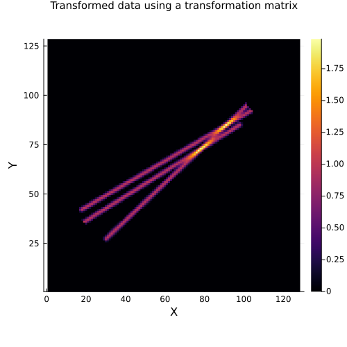

Tutorial for the DataToFunctions.jl package
import Pkg
Pkg.add("SyntheticObjects")
Pkg.add("StaticArrays")
Pkg.add("Plots")
Pkg.add("Random") Updating registry at `~/.julia/registries/General.toml`
Resolving package versions...
No Changes to `~/work/DataToFunctions.jl/DataToFunctions.jl/docs/Project.toml`
No Changes to `~/work/DataToFunctions.jl/DataToFunctions.jl/docs/Manifest.toml`
Resolving package versions...
No Changes to `~/work/DataToFunctions.jl/DataToFunctions.jl/docs/Project.toml`
No Changes to `~/work/DataToFunctions.jl/DataToFunctions.jl/docs/Manifest.toml`
Resolving package versions...
No Changes to `~/work/DataToFunctions.jl/DataToFunctions.jl/docs/Project.toml`
No Changes to `~/work/DataToFunctions.jl/DataToFunctions.jl/docs/Manifest.toml`
Resolving package versions...
No Changes to `~/work/DataToFunctions.jl/DataToFunctions.jl/docs/Project.toml`
No Changes to `~/work/DataToFunctions.jl/DataToFunctions.jl/docs/Manifest.toml`Load the packages
using DataToFunctions
using SyntheticObjects
using StaticArrays
using Random
using PlotsWe set the Random.seed for reproducibility
Random.seed!(14)Random.TaskLocalRNG()Define the data
sz = 128
data = filaments3D((sz, sz, 1), num_filaments=3)[:, :, 1]128×128 Matrix{Float32}:
0.0 0.0 0.0 0.0 0.0 0.0 0.0 0.0 … 0.0 0.0 0.0 0.0 0.0 0.0 0.0
0.0 0.0 0.0 0.0 0.0 0.0 0.0 0.0 0.0 0.0 0.0 0.0 0.0 0.0 0.0
0.0 0.0 0.0 0.0 0.0 0.0 0.0 0.0 0.0 0.0 0.0 0.0 0.0 0.0 0.0
0.0 0.0 0.0 0.0 0.0 0.0 0.0 0.0 0.0 0.0 0.0 0.0 0.0 0.0 0.0
0.0 0.0 0.0 0.0 0.0 0.0 0.0 0.0 0.0 0.0 0.0 0.0 0.0 0.0 0.0
0.0 0.0 0.0 0.0 0.0 0.0 0.0 0.0 … 0.0 0.0 0.0 0.0 0.0 0.0 0.0
0.0 0.0 0.0 0.0 0.0 0.0 0.0 0.0 0.0 0.0 0.0 0.0 0.0 0.0 0.0
0.0 0.0 0.0 0.0 0.0 0.0 0.0 0.0 0.0 0.0 0.0 0.0 0.0 0.0 0.0
0.0 0.0 0.0 0.0 0.0 0.0 0.0 0.0 0.0 0.0 0.0 0.0 0.0 0.0 0.0
0.0 0.0 0.0 0.0 0.0 0.0 0.0 0.0 0.0 0.0 0.0 0.0 0.0 0.0 0.0
⋮ ⋮ ⋱ ⋮
0.0 0.0 0.0 0.0 0.0 0.0 0.0 0.0 0.0 0.0 0.0 0.0 0.0 0.0 0.0
0.0 0.0 0.0 0.0 0.0 0.0 0.0 0.0 … 0.0 0.0 0.0 0.0 0.0 0.0 0.0
0.0 0.0 0.0 0.0 0.0 0.0 0.0 0.0 0.0 0.0 0.0 0.0 0.0 0.0 0.0
0.0 0.0 0.0 0.0 0.0 0.0 0.0 0.0 0.0 0.0 0.0 0.0 0.0 0.0 0.0
0.0 0.0 0.0 0.0 0.0 0.0 0.0 0.0 0.0 0.0 0.0 0.0 0.0 0.0 0.0
0.0 0.0 0.0 0.0 0.0 0.0 0.0 0.0 0.0 0.0 0.0 0.0 0.0 0.0 0.0
0.0 0.0 0.0 0.0 0.0 0.0 0.0 0.0 … 0.0 0.0 0.0 0.0 0.0 0.0 0.0
0.0 0.0 0.0 0.0 0.0 0.0 0.0 0.0 0.0 0.0 0.0 0.0 0.0 0.0 0.0
0.0 0.0 0.0 0.0 0.0 0.0 0.0 0.0 0.0 0.0 0.0 0.0 0.0 0.0 0.0define the interpolation function using this package
f_affine = get_function_affine(data)(::DataToFunctions.var"#interpolated#28"{Matrix{Float32}, Interpolations.FilledExtrapolation{Float32, 2, Interpolations.BSplineInterpolation{Float32, 2, Matrix{Float32}, Interpolations.BSpline{Interpolations.Linear{Interpolations.Throw{Interpolations.OnGrid}}}, Tuple{Base.OneTo{Int64}, Base.OneTo{Int64}}}, Interpolations.BSpline{Interpolations.Linear{Interpolations.Throw{Interpolations.OnGrid}}}, Float32}}) (generic function with 2 methods)define the transformation parameters
params = [1.0, 2.0, 1.2, 0.8, 0.0, 0.0, 0.0]7-element Vector{Float64}:
1.0
2.0
1.2
0.8
0.0
0.0
0.0apply the transformation
data_transformed = f_affine(params)
heatmap(data_transformed, aspect_ratio=1
, title="Transformed data using a transformation parameters vector"
, titlefontsize=10, size=(500, 500)
, xlabel="X", ylabel="Y")
# The next example is to use a transformation matrix
matrix_c = [1.0 0.0 2.0;
0.0 1.0 3.0;
0.0 0.0 1.0]
data_transformed_m = f_affine(SMatrix{3, 3}(matrix_c))
heatmap(data_transformed_m, aspect_ratio=1
, title="Transformed data using a transformation matrix"
, titlefontsize=10, size=(500, 500)
, xlabel="X", ylabel="Y")
Now we try to do the transformation using a polynomial function we first define the interpolation object using the DataToFunctions package with a polynomial of order 1
This page was generated using Literate.jl.